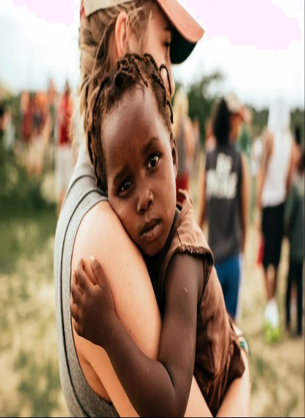

Más de 15,000 Proyectos Completados
Contribuyendo a causas sociales
Sobre Nosotros
Conoce lo que nos hace diferentes de otras plataformas
En VolunTrack, creemos que el voluntariado no solo se trata de ayudar, sino de crear comunidades más fuertes y comprometidas. Nuestra plataforma está diseñada para conectar ONGs y voluntarios, facilitando la gestión de proyectos e impulsando el impacto social de manera sostenible.
0
Más de 40 ONG administradas
0
Voluntarios disponibles para ayudarte